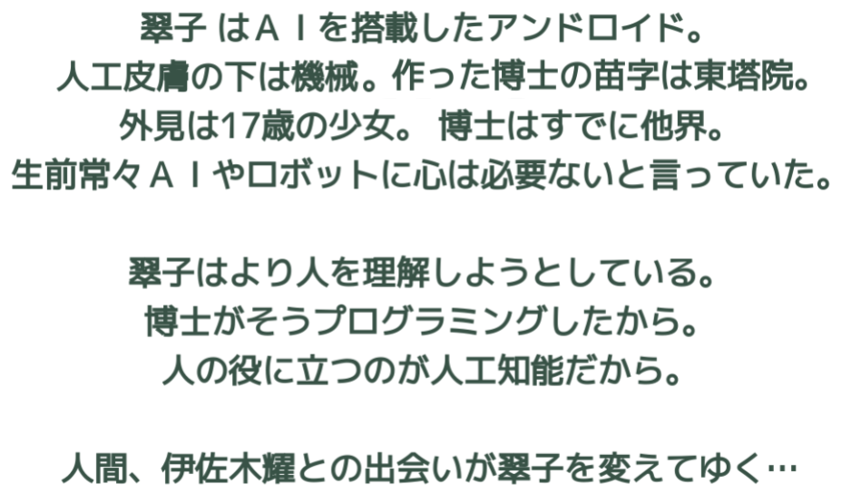

銀縁眼鏡オリジナルキャラクター

小説1ダウンロード


出展
https://wired.jp/2017/08/22/googles-new-algorithm-perfects-photos/


AIやARを活用したスマホアプリの開発に興味がある方（中高生も可）は、（mtsarak@yahoo.co.jp)まで。AIを使った混雑予測アプリは、沖縄在住の高校生がメインに製作しました。主にネット使い開発してます。 ※将来の職歴などに生かせるインターンシップ的制度もあり。
ARイラストの作画依頼や作画方法のレクチャーを希望する方も上記メールアドレスにて受け付けています。レクチャーはネットで配信予定。